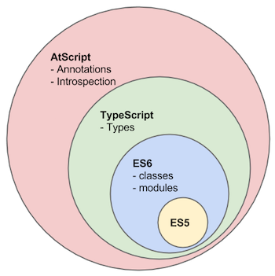

2.1.1. 什么是TypeScript
什么是Typescript?
TypeScript 是一种由微软开发和维护的免费开源编程语言。它是一个强类型的 JavaScript 超集，可编译为纯 JavaScript。它是一种用于应用级 JavaScript 开发的语言。对于熟悉 c#、Java 和所有强类型语言的开发人员来说，TypeScript 非常容易学习和使用。
TypeScript 可以在任何浏览器、主机和操作系统上执行。TypeScript 不是直接在浏览器上运行的。它需要一个编译器来编译和生成 JavaScript 文件。TypeScript 是带有一些附加特性的 ES6 JavaScript 版本。


为什么选择 Typecript
优点：

- Early Detection of Errors 及早发现错误
- Improves Code Readability 提高代码可读性
- Promotes Dependable Refactoring 促进可靠的重构
- Improved IDE Support 改进的IDE支持
- Easy Code Analysis 简易代码分析
缺点：
任何事物都是有两面性的，我认为 TypeScript 的弊端在于：
- 有一定的学习成本，需要理解接口（Interfaces）、泛型（Generics）、类（Classes）、枚举类型（Enums）等前端工程师可能不是很熟悉的概念
- 短期可能会增加一些开发成本，毕竟要多写一些类型的定义，不过对于一个需要长期维护的项目，TypeScript 能够减少其维护成本
- 集成到构建流程需要一些工作量
- 可能和一些库结合的不是很完美
大家可以根据自己团队和项目的情况判断是否需要使用 TypeScript。
TypeScript 和 JavaScript 有什么不同？
| JavaScript | TypeScript | |
|---|---|---|
| 1 | 它是由网景公司在 1995 年开发的。 | 它是 2012 年由安德斯·海尔斯伯格(Anders Hejlsberg)开发的。 |
| 2 | JavaScript 源文件在”。js”扩展。 | TypeScript 源文件是”.ts”扩展名。 |
| 3 | JavaScript 不支持 ES6。 | TypeScript 支持 ES6。 |
| 4 | 它不支持强类型或静态类型。 | 它支持强类型或静态类型特性。｜ |
| 5 | 它只是一种脚本语言。 | 它支持面向对象的编程概念，如类、接口、继承、泛型等。 |
| 6 | JavaScript 没有可选的参数特性。 | TypeScript 有可选的参数特性。 |
| 7 | 它是解释语言，这就是为什么它在运行时突出显示错误。 | 它编译代码并在开发期间突出显示错误。 |
| 8 | JavaScript 不支持模块。 | TypeScript 支持模块。 |
| 9 | 在这里，number 和 string 是对象。 | 在这里，number 和 string 是接口。 |
| 10 | JavaScript 不支持泛型。 | TypeScript 支持泛型。 |